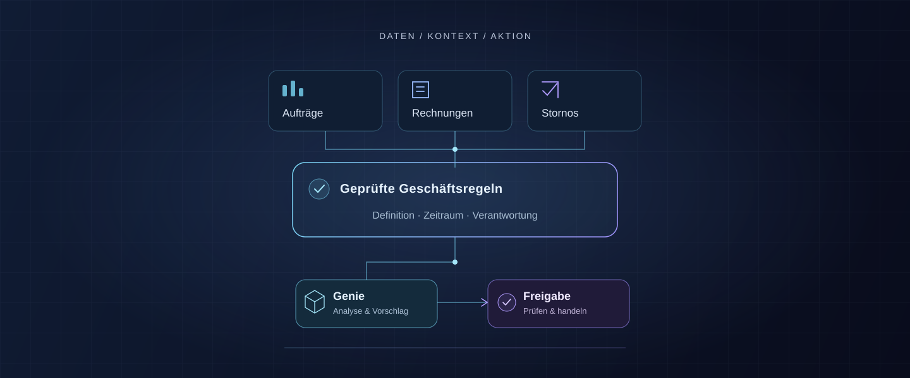
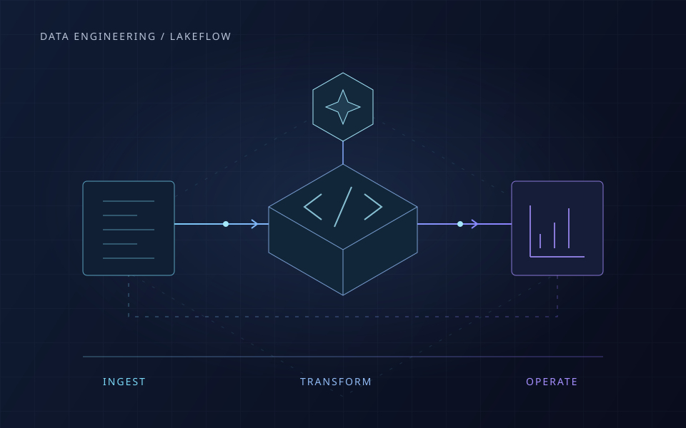
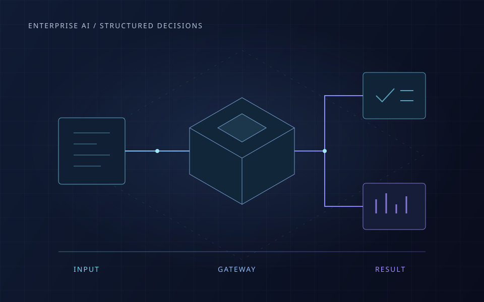
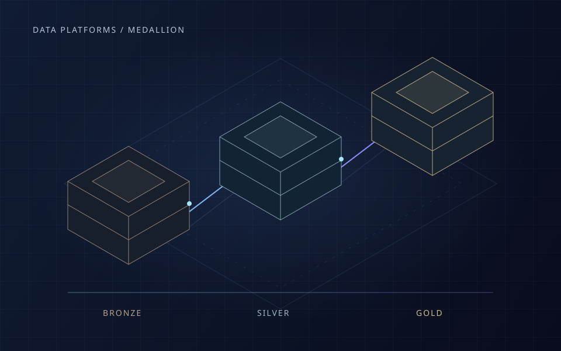
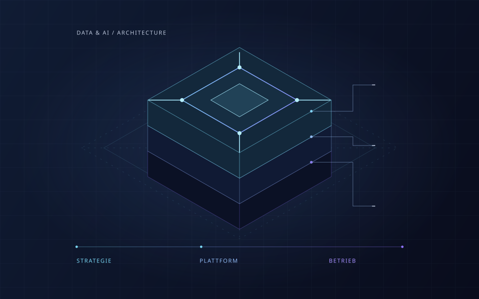
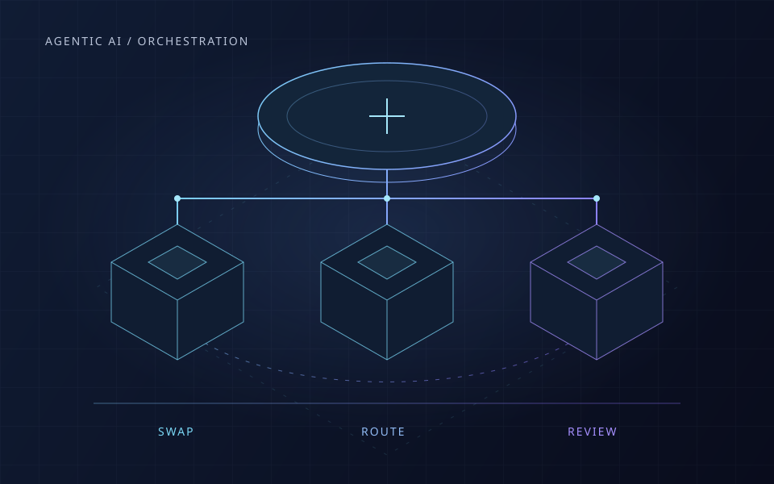

Databricks Genie: Warum autonome KI klare Geschäftsregeln braucht
Wie Daten, Kennzahlen und Freigaben einen verlässlichen Agenten-Workflow ermöglichen – mit einer fiktiven Umsatzanalyse und fünf Fragen für den Einstieg.
Artikel lesenEinordnungen zu Datenplattformen, Enterprise AI und produktivem Betrieb. Wir betrachten, was hinter der Technologie steckt und was das für Unternehmen bedeutet.
Hintergründe und Perspektiven zu Datenplattformen, Enterprise AI und produktivem Betrieb.

Wie Lakeflow, Genie Code und Governance zusammenspielen – und welche Prüfungen aus einer vorgeschlagenen Pipelineänderung einen verlässlichen Betriebsschritt machen.

Wie feste Antwortformate aus AI-Ausgaben verwendbare Prozessbausteine machen – und warum Schema, fachliche Prüfung und Eskalation zusammengehören.

Bronze, Silver und Gold entlang eines konkreten Datenflusses: wie Qualitätsregeln, fachliche Modelle und Verantwortlichkeiten zusammenpassen.

Was kostet ein verlässlich nutzbares AI-Ergebnis? Modellwahl, Kontext und Betriebsregeln erklärt – mit Rechenbeispiel und Einstiegsschritten.

Was Cross-Review zwischen Coding Agents konkret findet – und wie Unternehmen Orchestrierung, Zugriffe, Kosten und Abnahme zusammenbringen.
Sie möchten ein Data- oder AI-Thema in Ihrem Unternehmen angehen?